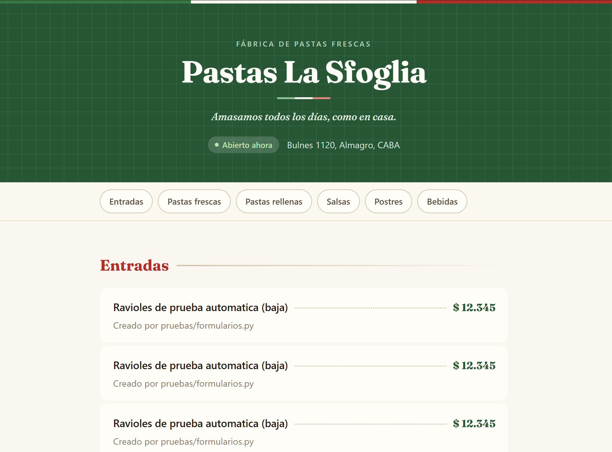
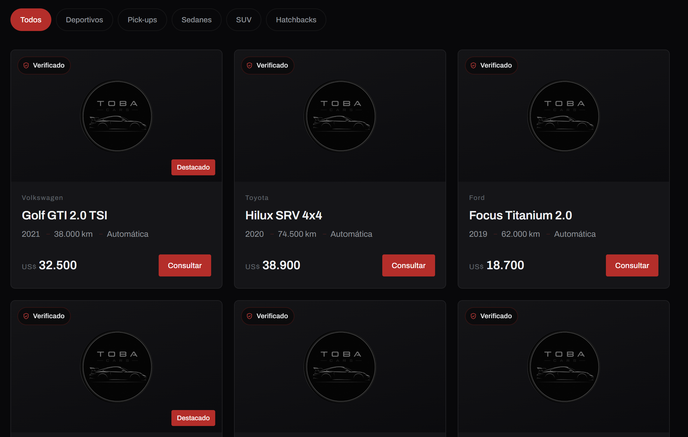

Casos de estudio
Cuatro sistemas completos, construidos para mostrarlos
Antes de que sigas leyendo: los cuatro son proyectos propios, con marcas y datos ficticios creados para el ejercicio. Todavía no son clientes reales. Lo decimos de entrada porque el punto no es el testimonio — es que el sistema existe, funciona y se puede abrir.
CASO 01 · CLÍNICAS · CASO INSIGNIA
Sanatorio del Plata
Un asistente por WhatsApp que atiende pacientes: saca turnos según la disponibilidad real de cada médico, responde dudas sobre obras sociales y estudios, y deriva a una persona cuando detecta algo delicado.
Si reconoce una urgencia médica, en vez de dar un turno indica ir a la guardia. Ese criterio es la diferencia entre un chatbot y un sistema de atención.
EL NÚMERO QUE MÁS IMPORTA
100+ h
En una clínica tipo, el mostrador está cerrado más de 100 de las 168 horas de la semana. Ese es el tiempo de atención que recupera el asistente.


CASO 02 · GASTRONOMÍA
Pastas La Sfoglia
Toma pedidos para retirar y reservas de mesa por WhatsApp como lo haría un empleado: conoce el menú y lo que está agotado en tiempo real, valida horarios de retiro y avisa si un horario está muy solicitado — sin bloquearlo, solo avisando.
Y jamás ofrece un plato que no hay. Cuando algo se sale de su alcance — una consulta por celiaquía, por ejemplo — se lo pasa al encargado y queda marcado en el panel hasta que alguien lo resuelve.
SE INTEGRA CON
Una carta pública que se actualiza sola apenas cambia algo en la cocina.
Un panel con vista distinta para encargado, mozo y cocina.
Cobro con Mercado Pago integrado al pedido.


CASO 03 · VENTA CON IA
Voltra Nimbus
Una landing de un solo producto con un asistente de venta que responde dudas y objeciones típicas. En el momento en que detecta intención real de compra, pide el contacto y lo califica automáticamente con un puntaje explicado, no inventado.
El puntaje mira tres cosas: qué tan urgente es, si el producto le sirve a esa persona, y si ya resolvió sus dudas de precio. Según el resultado dispara solo el seguimiento — WhatsApp inmediato si está listo, más información si todavía duda.
Todo queda visible en un panel con la curva de cómo fue subiendo el interés del cliente, turno a turno de la conversación.
esquema del panel — pendiente la captura del sistema real
POR QUÉ IMPORTA
Un vendedor con veinte consultas abiertas no sabe a quién llamar primero. Acá el sistema lo dice, y muestra la frase del cliente por la que lo dice.
CASO 04 · SITIO A MEDIDA
Toba Cars
Sitio de venta para una agencia de autos, hecho a mano sin plantillas de constructor: catálogo filtrable por tipo de vehículo e integración directa a WhatsApp en cada punto de contacto.
Accesible — funciona bien con teclado y lectores de pantalla — y rápido en cualquier celular, que es donde lo va a abrir la mayoría de la gente.
LO QUE SE RESOLVIÓ
Catálogo con filtros por tipo: deportivos, pick-ups, sedanes, SUV, hatchbacks.
Consulta por WhatsApp desde cada ficha, con el vehículo ya nombrado en el mensaje.
Navegación completa por teclado y foco visible.


¿Cuál de estos se parece a tu negocio?
Tres de los cuatro están armados como plantilla: si tu negocio se parece, el proyecto arranca adelantado. Escribinos y te mostramos el sistema funcionando.
Escribinos por WhatsApp